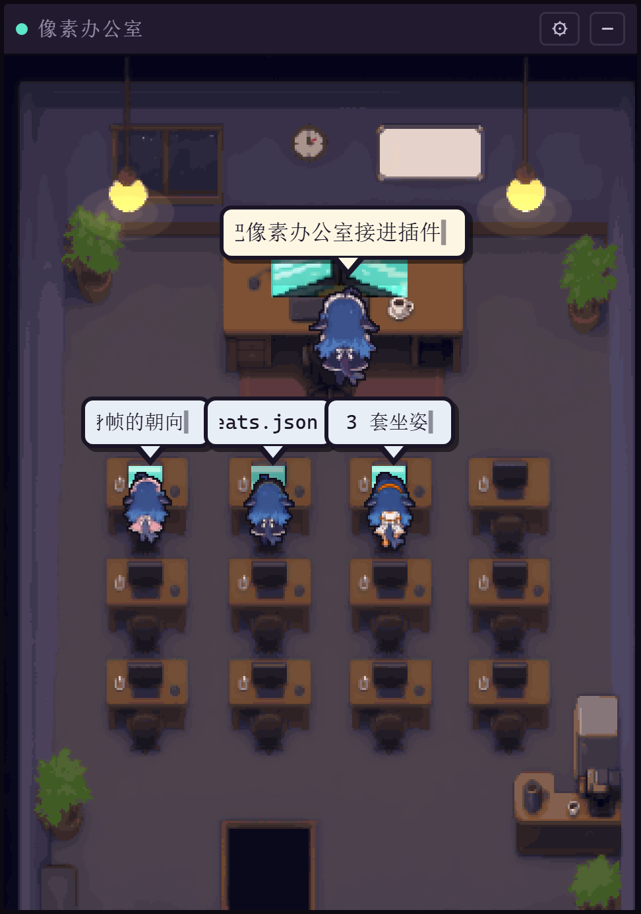
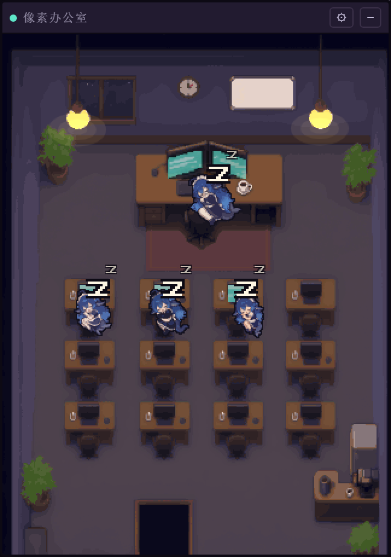
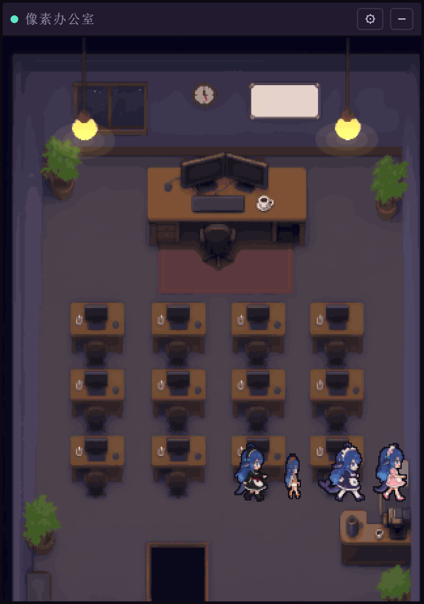
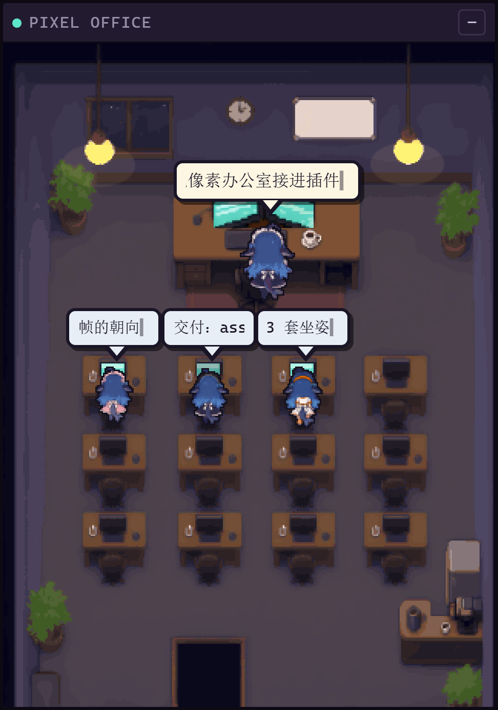
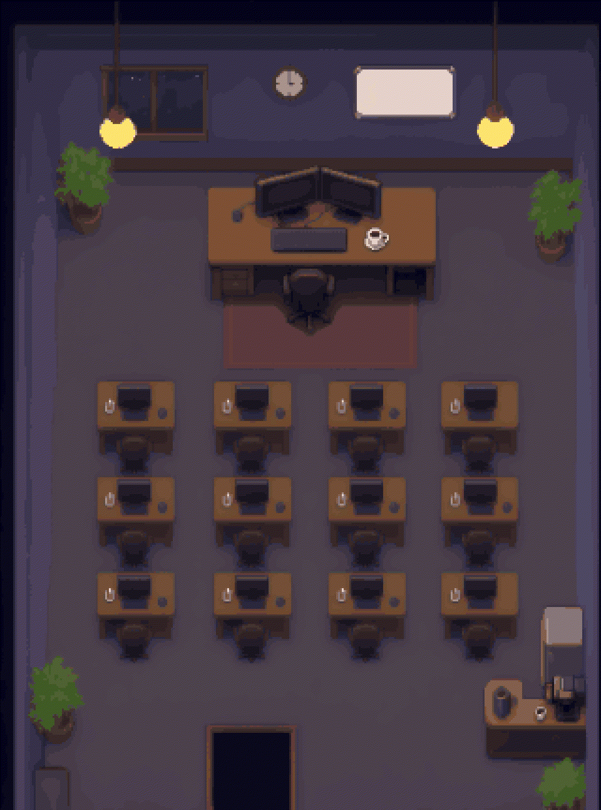
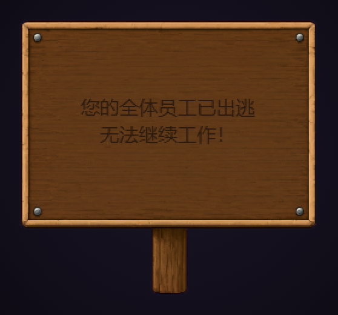
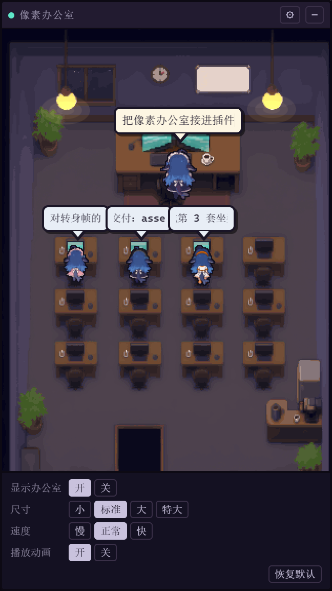

会话开在
办公室里
DSH 每开一个会话，就有一只像素小人从门口进来，坐到自己的工位上开始打字。主 agent 坐双屏大桌，子 agent 一人一格；它们敲键盘的时候，桌面上的屏幕同一刻亮起来。
一段四秒实录。气泡里的字按实测字宽横向滚，主 agent 一窗十个字，子 agent 一窗五个；长句走完才停。
八个同事
八套皮肤各占一格工位。点名字换人，左脚那块圆盘跟着换色。
猫耳。认不出的 model 落到这里最多：拿 agentId 做哈希取模，结果常是零。
一条消息的四个瞬间




会动的六件事
左边是它现在怎么动，右边那个开关对应设置面板里的同一项。关掉看看。
-
气泡按实测字宽滚动。主 agent 一窗十个字，子 agent 一窗五个字，长句横着走完才停。
-
闲置十秒，人趴到桌上睡，整个人缩一圈；有事件进来立刻醒，睡姿帧和坐姿帧是两套。
-
吊灯每六十秒掉一次电，持续一百二十毫秒；有人在敲键盘时亮得久一点。
-
挂钟按秒跳格，不连续扫。屏幕开机是扫描线展开，关机是线性衰减到全暗。
-
按住空格把鱼拖出办公室，松手它就坐在地上发呆；双击解除，它自己找路回工位。
-
设置面板四行：显示、尺寸、速度、动画，加一个恢复默认。切到隐藏，整间办公室收成一块木牌。
摊开的账

拖完最后一格
掉下一块牌子
按住空格再拖，鱼就不在工位上坐好了，而是就地坐在地上发呆，头顶冒问号抖一秒。双击它就自己站起来，绕过门洞走回工位。
把四条全拖出画布，它们排成一列向右走掉，然后从画布中央掉下这块木牌。把鱼一只只拖回来，牌子自己收走。
牌上的字先量字宽再排两行，不会溢出牌边；底图是四百八十二字节的像素木牌。

会问的
它会读到我的代码吗
不会。插件只订阅 DSH 抛出的会话事件：消息文本、工具名、子 agent 的模型名和座位号。文件内容和命令输出都不进插件，它也不需要这些。
要什么版本
DSH 0.1.7-rc.1 以上，web 平台。放进 DSH 口袋的 node_modules 就能跑，不额外起服务，不占端口。
动画会不会拖慢界面
一个 requestAnimationFrame 循环，全在 320×431 的逻辑坐标里画，最后整块缩放一次贴到画布。窗口隐藏时停帧，缩放小于某一档时降帧。
子 agent 的皮肤怎么定
先按 model 名映射；认不出的 model 拿 agentId 做字符串哈希取模。两只撞到同一套时，后到的顺延一格，保证同屏不撞衫。
能自己换底图和人物吗
能。场景是一张 320×431 的逻辑坐标底图，座位锚点写在 seats.json 里。换底图之后跑一次扫图脚本重新量桌沿，改锚点即可。
验收脚本怎么跑
起一个假 DSH 界面的验收台，再用无头浏览器连上去，用真实的指针事件驱动真实代码。十五套脚本覆盖入场、睡姿、拖拽、气泡滚动、面板拖动、彩蛋和双击解除。
放进 DSH 的口袋
把插件包拷进 node_modules，重启 DSH。它会自己从门口走进来坐下。
装上Apache-2.0。仓库里是插件包、资产生产工具链，和那十五套验收脚本。
packages/dsh-pixel-office 拷进 DSH 的 node_modules。
